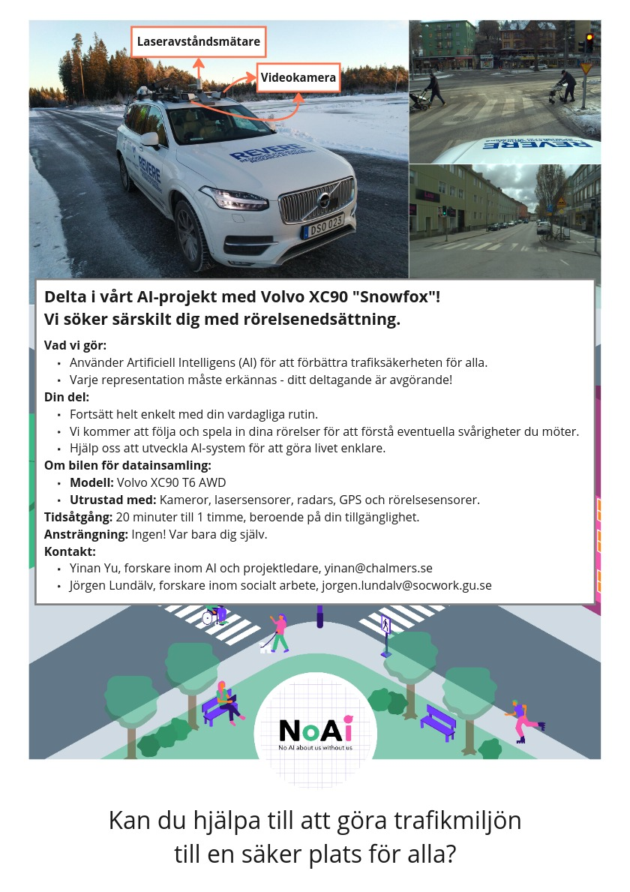

Join us!
Join Our Community for Inclusive Traffic Safety ❤️
Together, we can create more inclusive and safer cities for everyone.

For Individuals
Share Your Story
We believe every experience matters in building safer, more accessible cities. Your unique perspective can help:
- Shape the future of traffic safety and urban design
- Improve AI systems’ understanding of diverse mobility patterns
- Create more inclusive public spaces for everyone
How You Can Participate
-
Share Your Experience
Whether you navigate cities using a wheelchair, live with visual or hearing impairments, or have other mobility experiences to share, your story can make a difference. -
Join Our Sensor Data Collection
Help us improve AI systems’ ability to detect and respond to diverse mobility patterns. -
Get in Touch
Contact Dr. Jörgen Lundälv at jorgen.lundalv@socwork.gu.se to learn more or share your story.
For Organizations
Partner With Us
We’re building a network of organizations committed to improving traffic safety and accessibility. Together, we can:
- Identify infrastructure gaps affecting your community
- Create safer environments for all road users
- Develop inclusive AI systems using real-world data
- Design sustainable urban mobility solutions
Current Partner Organizations
Mobility & Physical Disability
- Personskadeförbundet RTP Göteborg
- DHR Göteborg (Delaktighet, Handlingskraft, Rörelsefrihet)
- Unga Rörelsehindrade Göteborgsklubben
- Föreningen för De Neurosedynskadade (FfdN)
Sensory Disabilities
Join Our Network
If your organization works with accessibility, mobility, or disability rights, we’d love to collaborate. Contact us to discuss partnership opportunities. Contact Dr. Jörgen Lundälv at jorgen.lundalv@socwork.gu.se to learn more!